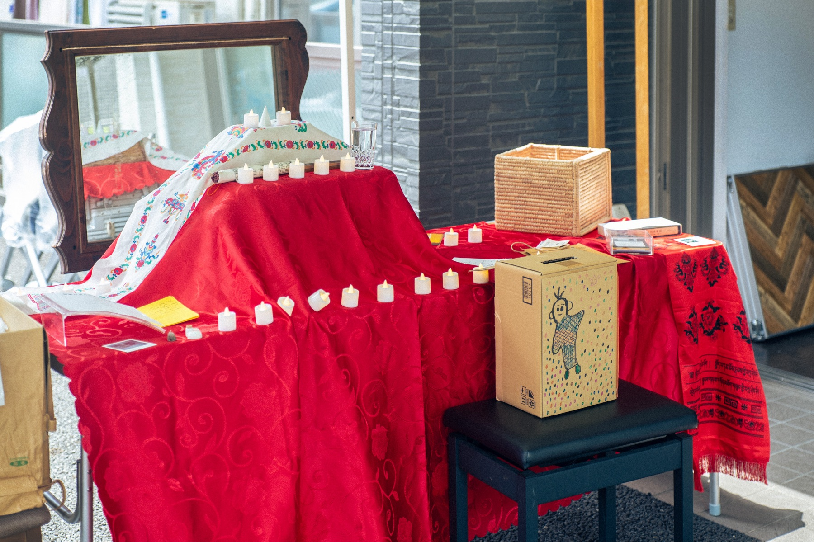

Altar to the Worthless
価値がないと切り捨てられたものたちが、祭壇に集まる。
かごからひとつ、あなたのものでも。
供えてもいいし、祀ってもいい。
値段とは別のところで、物はまだ祈られている。
Things discarded as worthless gather at the altar.
Take one from the basket — even something of yours.
You may offer it, or enshrine it.
Apart from price, objects are still being prayed for.
作家が展示場所や展示に関連する場所で得た、廃棄されるであろうものや値段がつかないものを祭壇に並べ、キャプションを置いておく。そして来場者が「値段のつかない持ち物」を自由に、本尊への供物としても置いていく参加型インスタレーション。写真、壊れた道具、レシート――「価値なき」売り物にならない物が並び、価値と無価値の境目を撹乱する。障がい者のグループホームのスペースであるみなひろ八王子（円環の食卓 Vol.6）で初出。
A participatory installation in which the artist arranges objects gathered at or near the exhibition site — things that would otherwise be discarded, or that carry no price — on an altar, each with a caption. Visitors are then free to leave their own "priceless belongings" as offerings. Photographs, broken tools, receipts — unsellable things "without value" — are laid out together, unsettling the line between value and worthlessness. First shown at Minahiro Hachioji, a space run by a group home for people with disabilities (Boundless Table Vol.6).